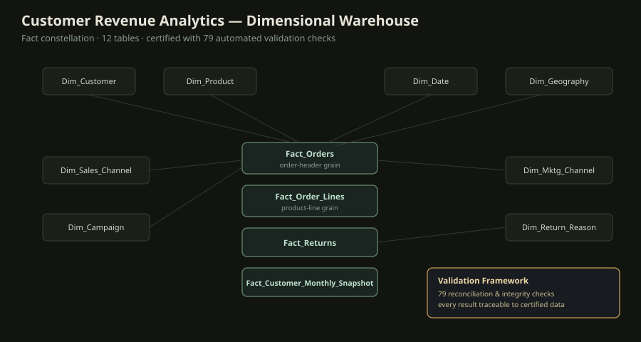
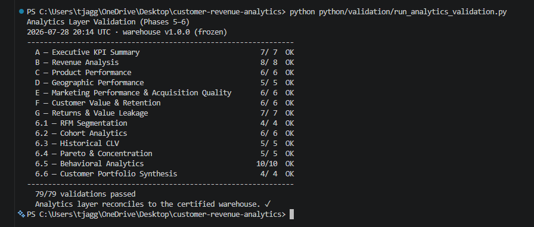
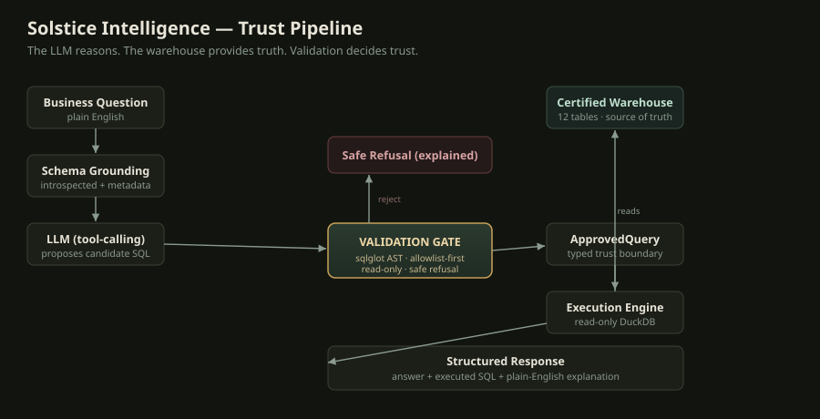
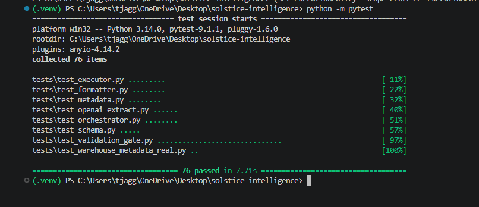
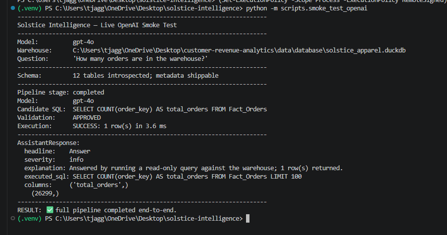
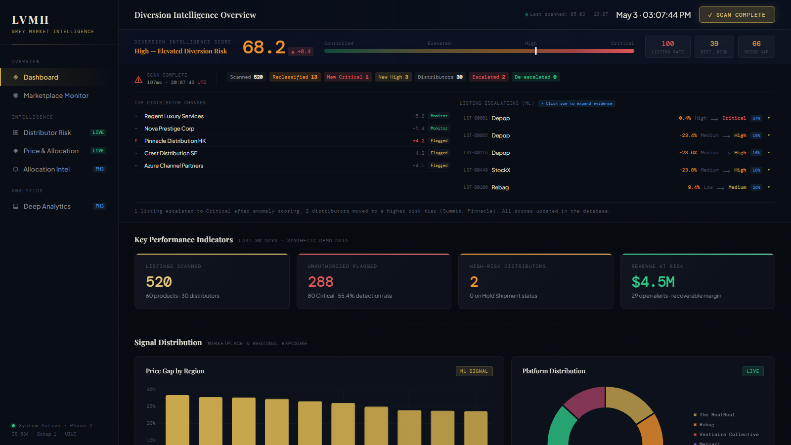
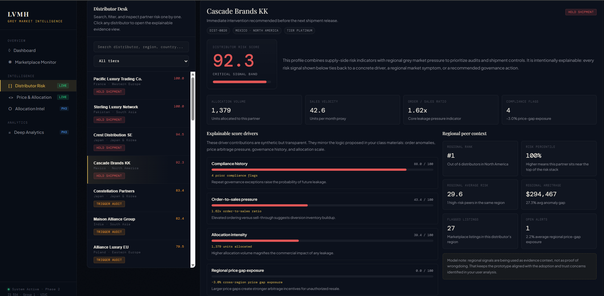

Things I've Built.
Revenue questions — who are the most valuable customers, which cohorts retain, where is churn rising — require a trustworthy analytical foundation. Ad-hoc queries against raw tables produce numbers no one can fully trust or reproduce.
A validated dimensional data warehouse with a modular SQL analytics layer on top, built so every published result is traceable back to validated source data — the foundation the Solstice assistant later queries.
Modeled the warehouse as a fact constellation rather than a single fact table, because orders, order lines, returns, and monthly snapshots are genuinely different grains — collapsing them would hide the distinction between order-header and product-line revenue. Froze the schema and treated it as certified once validation passed, so downstream analytics build on a stable, known-good foundation rather than a shifting one.
A star/constellation schema of dimension tables surrounding four fact tables at different grains, with a Python validation framework that must pass before the warehouse is treated as trusted, and a modular SQL layer of 13 analytics modules built on top.

- Designed a dimensional warehouse (star schema, fact constellation) with dimension tables spanning customer, product, date, geography, channel, campaign, and return-reason.
- Built 13 modular SQL analytics modules covering RFM segmentation, cohort retention, customer lifetime value, and Pareto revenue concentration.
- Engineered an automated Python validation framework of 79 reconciliation and integrity checks that must pass before the warehouse is used for any analytics.
- Added an executive decision layer that turns validated findings into evidence-ranked business recommendations.
79 automated reconciliation and integrity checks must pass before the warehouse is trusted for analytics (its internal "certified" milestone); repository governance, versioning, and documentation are maintained throughout so the whole pipeline is reproducible.

Gives decision-makers customer analytics they can act on with confidence, because every number is reproducible and traceable to validated source data — and provides the governed foundation that makes a natural-language analytics interface (Solstice) possible.
Business users have questions and the data exists — but getting an answer means waiting on an analyst to write SQL. That queue is slow and expensive for questions that should take seconds.
A governed assistant that takes a question in plain English and returns a validated answer from a dimensional warehouse, showing the exact SQL it ran. The governing principle: the LLM reasons, the warehouse provides truth, and a validation layer decides trust — the model never touches the database directly.
Chose an allowlist-first validation model over a denylist, because a denylist can never enumerate every dangerous function — an allowlist is a positive guarantee that only real warehouse tables are reachable. Used sqlglot AST parsing rather than string matching so obfuscated or nested threats can't slip through. Kept the LLM behind a client protocol so the security-critical layers stay deterministic and fully testable.
Six typed, independently-tested layers. A natural-language question is grounded in the live schema, an LLM proposes a candidate query via tool-calling, and every query passes a validation gate before a read-only executor runs it against the validated warehouse.

- Built an allowlist-first validation gate using sqlglot AST parsing: every referenced table must resolve to a real warehouse object, non-SELECT statements are rejected, and queries are read-only by construction.
- Hardened the gate after adversarial testing exposed a file-disclosure exploit (a crafted query could read local files) — the fix rejects table functions structurally, not by string matching.
- Isolated the LLM behind a client protocol so the full pipeline is deterministically testable with a fake client and zero network calls.
- Enforced a typed trust boundary (ApprovedQuery) so the executor can only run gate-approved SQL, with an independent row-cap backstop.
A comprehensive automated test suite covering every layer (schema, metadata, validation gate, execution, orchestration, formatting), a live end-to-end smoke test against the OpenAI Responses API, and 8 Architecture Decision Records documenting every major engineering choice.


Turns a multi-day analyst request into a self-service question, while keeping the trust guarantees a regulated business needs: answers are always warehouse-computed, every query is shown, and unsafe requests are refused rather than guessed.
Setting prices in a competitive market is a moving target: competitors react, demand shifts, and static rules leave money on the table. The question is whether a learning agent can price better than a hand-tuned expert strategy — reliably, not just occasionally.
An end-to-end reinforcement learning system that trains a PPO agent to price dynamically inside a simulated competitive retail market calibrated on real transaction data, then rigorously benchmarks it against expert strategies across market shocks.
Chose PPO for stability in a continuous, non-stationary pricing environment, and validated across five random seeds rather than a single run — because a single-seed RL result is noise, not evidence. Built the shock engine to modify structural demand parameters rather than apply arbitrary multipliers, so market disruptions are economically meaningful and the results defensible.
A calibrated OLS demand model feeds a custom OpenAI Gymnasium environment with a composable shock engine and five competitor archetypes; a PPO agent trains against them, with a validation suite run before every training cycle.

- Cleaned and processed 26,342 real retail transactions to fit a calibrated OLS demand model (R²=0.516), producing 13 publication-ready validation figures.
- Built a custom OpenAI Gymnasium environment with a composable Shock Engine injecting 5 market disruption types (inflation, recession, demand surge, stagflation) via structural demand parameters — not arbitrary multipliers.
- Trained a PPO agent over 600,000 simulation steps across 5 random seeds; the agent wins 5/5 market scenarios and captures 46.8% of the revenue pool vs. a 33.3% equal-share benchmark.
- Introduced a price-stability penalty (λ=2,500) that reduces price volatility by 90.8% while improving profit by 2.1% — addressing a key barrier to real-world e-commerce deployment.
Benchmarked against 5 competitor archetypes across 25 head-to-head matchups with multi-seed validation; profit lifts of +8% to +79% over an expert-designed benchmark across all market conditions.
Demonstrates that a learning agent can outperform a hand-tuned expert pricing strategy while controlling price volatility — the exact combination a real e-commerce team would need before trusting automated pricing.
Luxury brands lose control of pricing and positioning when products leak into grey-market channels. Brand-protection teams need to spot suspicious distributor activity early — and understand why a listing was flagged, not just that it was.
A deployed competitive-intelligence web application that scans marketplace listings, scores distributor diversion risk with an anomaly model, and surfaces an evidence trail explaining every flag.
Chose Isolation Forest for anomaly detection because grey-market diversion is an unlabeled problem — there's no clean "fraud" ground truth to train a classifier on, so unsupervised anomaly scoring fits the data that actually exists. Prioritized explainability (evidence trails) over raw model complexity, because a risk score no one can justify is a score no brand-protection team will act on.
A full-stack Flask application with SQLite persistence, an Isolation Forest scoring layer, scan-history tracking, and a what-if analytics simulator — deployed live so it can be used, not just demoed.
- Built and deployed a live Flask web application that scans marketplace listings and scores distributor diversion risk with an Isolation Forest anomaly model.
- Engineered the full stack — Flask API, SQLite persistence, scan-history tracking, and a what-if analytics simulator.
- Surfaced evidence trails explaining why each listing was flagged, turning an anomaly score into an actionable, defensible signal.
Deployed and operational as a live application with persisted scan history, so the anomaly scoring and evidence trails can be exercised end-to-end rather than only demonstrated in a notebook.


Gives brand-protection stakeholders an operating view of diversion exposure — early, explainable signals they can act on, rather than a black-box score.
An interactive 6-page Power BI dashboard analyzing 75 years of Formula 1 history, included as a focused showcase of BI and data-visualization skills alongside the systems-focused projects above.
- Modeled the Ergast dataset (races, drivers, constructors, circuits) as a star schema with 20+ DAX measures.
- Built six thematically distinct, fully interactive pages covering drivers, constructors, races, and championship history.
- Designed for exploration — dynamic filtering, drill-through, and KPI cards emphasizing usability and storytelling.